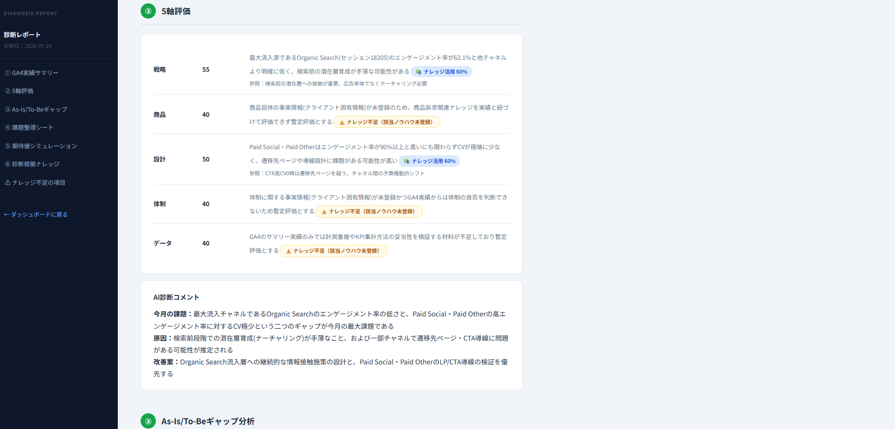
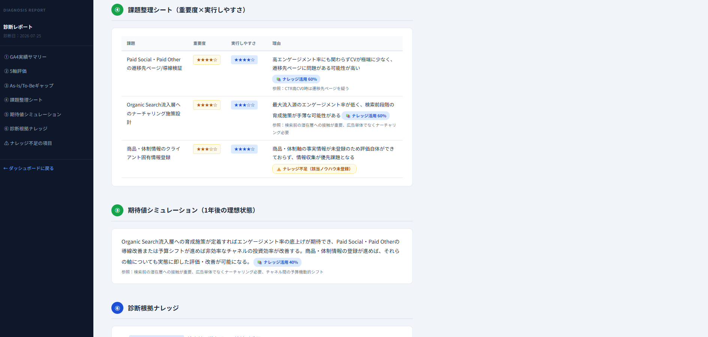
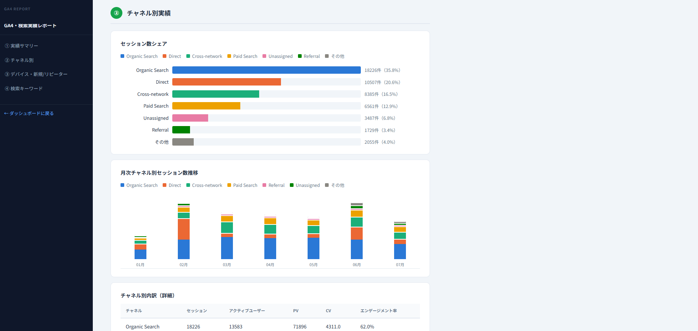
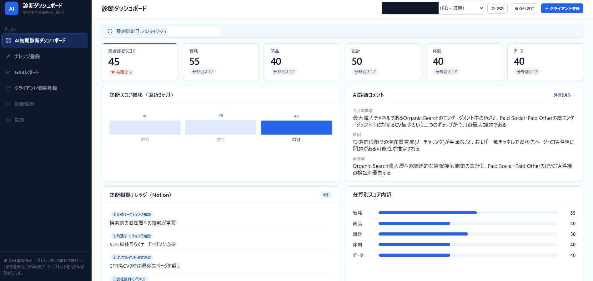
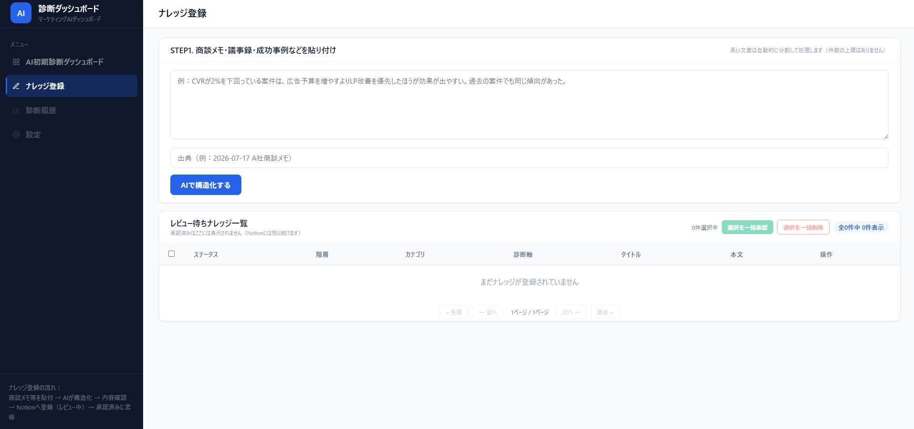

プロジェクトの本質
このツールの価値は「AIが賢い診断をする」ことではありません。「コンサルタントのノウハウが、使うほどに組織の資産として積み上がっていく」ことにあります。
コンサルタント一人ひとりの頭の中にあるノウハウ・判断基準を会社の共有資産として蓄積し、誰が診断しても同じ品質の判断ができる状態をつくります。ナレッジが増えるほど診断の精度が上がっていく、いわば「成長する診断ツール」です。
- コンサル各自の暗黙知を、会社の明示的な資産に変換する
- 全員が同じ判断基準で診断できる（属人化の解消）
- ナレッジをNotionに集約することで、アプリを更新しなくても全員の診断品質が翌日には向上する
スコープ定義
ほりの式マーケティング自走化プログラム（180日・12ステップ）
本ツールは、そのうちステップ①「マーケティング診断」専用です。
無料相談との対応関係
契約フローは 資料DL → 無料相談（1時間・課題ヒアリング）→ 契約 → プロジェクト開始。ステップ①は、この無料相談に相当します。
診断アウトプット設計
事実の整理
- 自社紹介、診断についての概要説明
- ヒアリングシート回答のサマリー整理
- GA4・Search Console・Dockpit等の関連データ分析（画面キャプチャ＋コメント、目安10ページ程度）
診断
- 現状と目標のギャップ（As-Is／To-Be）
- 診断サマリー（プロ視点の初見と方向性）
- 5軸評価：戦略（勝ち筋・競合差別化）／商品（コンセプトと伝え方のギャップ）／設計（認知〜購入〜LTVのファネル・ボトルネック）／体制（社内外リソース）／データ（データ基盤・活用度）
- 課題整理シート（重要度×実行しやすさで優先課題トップ3を分類）
- 期待値シミュレーション（1年後の理想状態）
実際の診断レポート画面
「Ⅱ 診断」の内容は、実装済みの診断レポート画面（/report/{client_id}/diagnosis）でこのように表示されます。各項目には「📚 ナレッジ活用○%」「⚠️ ナレッジ不足」のバッジが付き、AIの解釈がどれだけ登録済みナレッジに基づいているかが一目で分かります。


改善提案
- 達成に向けた年間ロードマップ
- 成功のための条件（期待値のすり合わせ：丸投げでは進まない、等）
- 90日おためしプロジェクト：最短で小さな成果をつくる伴走支援（3ヶ月・150万円）
- 詳細内容：月2回MTG、プロジェクト進行管理、宿題、数値管理など
- 次の意思決定と開始手順
ヒアリングシート
| 区分 | 質問内容 |
|---|---|
| 診断対象 | 今回、診断対象とする事業・商品・サービス（複数ある場合は最優先のもの） |
| 事業概要 | 対象事業の売上規模、顧客数、主な販売方法（概算で可） |
| 収益モデル | 対象事業の収益モデルに近いもの |
| 目標 | 1年後に実現したい状態（売上・利益・顧客数・継続率など） |
| 現在の課題 | 目標達成のうえで優先的に解決すべき課題を3つ |
| 商品説明 | 初めて知る見込み客向けに、商品・サービスを300文字以内で説明 |
| 顧客課題 | 「誰の、どのような悩みを、どのように解決する商品か」を一文で |
| 選ばれる理由 | 顧客が競合ではなく自社を選ぶ最大の理由 |
| 競合企業 | ベンチマークしている競合企業を3つ |
| 優良顧客 | 売上・利益への貢献が大きく、今後も増やしたい顧客像 |
| 購買障壁 | 購入・契約前に感じる不安、比較対象 |
| 購買導線 | 認知〜問い合わせ・購入・契約までの主な流れ |
| 過去の施策 | 過去2〜3年で実施したが成果が出なかった／途中で止めた施策 |
| 成功施策 | 最も成果が出た施策と、その理由 |
| 社内体制 | マーケティング・営業に関わる社内メンバーと役割 |
| 外部パートナー | 現在依頼している外部パートナーと担当範囲 |
| 意思決定 | 施策の優先順位・予算を最終決定する人 |
| 制約条件 | 改善を進めるうえで事前に把握すべき制約 |
| 改善意向 | 優先課題と改善可能性が明確になった場合、外部支援も含め改善を進める意向はあるか |
KPI設計
契約継続型 サブスク・継続契約向け
- 新規契約・初回購入数（月間・年間）
- 初回から本契約への引き上げ率
- 月次・年次継続率／解約率
- 平均継続期間
- 顧客単価（月額・年間）
- LTV
- 投資回収期間
- 追加購入・アップセル率
- 休眠顧客数
Web集客型 リード獲得・商談型向け
- Webサイト訪問数（月間・年間）
- 問い合わせ・資料請求数（月間・年間）
- 商談数／成約数（月間・年間）
- 問い合わせ率／商談化率／成約率
- 平均客単価
- 新規顧客獲得単価
- 粗利率
データ共有依頼リスト
| 分類 | 共有をお願いするもの | 対象期間 |
|---|---|---|
| GA4 | GA4の閲覧権限 | 直近12か月 |
| Search Console | 閲覧権限または検索レポート | 直近12か月 |
| ヒートマップ | LPなどのヒートマップデータ | 直近12か月 |
| 売上 | 月別売上、粗利、顧客数、受注件数 | 直近12か月 |
| 広告 | 媒体別広告費、CV、CPA | 直近12か月 |
| サービス資料 | 商品資料、価格表、商品別売上構成 | 最新版 |
| 顧客の声 | レビュー、アンケート、お礼メール、導入事例 | 10件以上が理想 |
| 営業資料 | 営業資料、提案書、トークスクリプト | 最新版 |
| 失注・解約分析 | 失注理由、解約理由、問い合わせ内容 | 直近6〜12か月 |
| 過去施策 | 過去の改善提案書、レポート、計画書 | 直近2〜3年 |
| 体制図 | 社内体制図、外部パートナー一覧 | 現在 |
診断5軸と必要データのマッピング（2026-07-25追加）
診断サマリーの5軸（戦略／商品／設計／体制／データ）は、それぞれ必要とするインプットの種類が異なります。GA4のようなアクセス解析データだけでは判断できない軸（特に商品・体制）があることが分かったため、軸ごとに何が必要かを明示しています。
| 軸 | 必要な情報 | 主な入力経路 |
|---|---|---|
| 戦略 | 事業概要・1年後目標・現在の課題・顧客課題・選ばれる理由・競合3社・優良顧客像 | 未実装 |
| 商品 | 商品説明・サービス資料（価格表・売上構成）・顧客の声・購買障壁 | Facts登録 |
| 設計 | GA4・Search Console・ヒートマップ・購買導線・広告データ | API連携＋Facts登録 |
| 体制 | 社内体制・外部パートナー・意思決定者・体制図 | Facts登録 |
| データ | GA4・Search Console・売上データ・広告データ | API連携＋Facts登録 |
GA4レポート画面（実画面）
AI診断とは独立した、Looker Studio相当のGA4・Search Consoleレポート画面（/report/{client_id}/ga4）。「設計」「データ」軸のインプットはここで確認できます。

クライアント固有Facts登録機能（2026-07-25実装）
GA4・Search Console等のAPIデータではカバーできない定性情報（サービス資料・顧客の声・体制図など9カテゴリ）を、クライアントごとに登録できる画面を新設しました。テキスト貼り付けと、PDF・Excel・PowerPoint・CSVファイルのアップロードの両方に対応し、カテゴリごとにどちらの登録方法が向いているか（表・原本ものはファイル、文章主体はテキスト）を画面上でヒント表示します。
※ この画面の実キャプチャは未取得のため、実装内容に基づく再現図です。
システム全体構成
- ナレッジのみNotion上で全員共通、アプリ本体は各PCのローカル環境
- 誰かがナレッジを追加すると、翌日には全員の診断に反映される（アプリの更新は不要）
- 他社へ展開する場合も、ナレッジ（Notion側）を差し替えるだけで済む設計
診断ダッシュボード（実画面）
各PC上でローカル起動するアプリ本体のトップ画面。総合診断スコア・5軸スコア・スコア推移・診断根拠ナレッジを一覧できます。

ナレッジの3階層構造
共通マーケティング知識
SEO・広告・GA4・CVR・KPIなど、業界一般の知識
コンサルタント固有の型（ほりの式）
判断基準・考え方・成功事例・NG例
会社独自のノウハウ
案件・商品・過去提案・顧客情報
Notion側に「ステータス」を持たせ、AIが診断に使うのは「承認済み」のもののみとします。商談直後のアイデアや未検証の仮説（下書き／レビュー中）が、そのまま診断品質に影響することを防ぎます。
Facts と Knowledge の分離
| 種別 | 保存先 | 内容 |
|---|---|---|
| Facts（事実） | SQLite（ローカル） | 顧客データ・APIデータ・診断履歴・KPI実測値 |
| Knowledge（知識） | Notion（共通） | 診断基準・改善方法・成功事例・ノウハウ |
ナレッジを育てる仕組み
開発時は、これまで蓄積された商談データ・提案資料・成功事例をAIでナレッジ化し初期資産を構築します。運用開始後は、ダッシュボードの「ナレッジ登録機能」から新しい商談・成功事例を継続的に追加します。
未検証の仮説がそのまま正式なナレッジになることを防ぐため、Notionへ直接登録せず「知識候補」としてSQLiteに一度保存 → 人が承認 → Notion正式ナレッジというワンクッションを設けます。
- 商談メモ・議事録・提案書・成功事例・失敗事例を入力
- AIが判断基準・成功パターンを抽出し、構造化
- 人が内容を確認・承認
- 承認されたものだけがNotionへ登録
ナレッジ登録画面（実画面）
商談メモ・議事録を貼り付けて「AIで構造化する」を押すだけで、AIが判断基準・成功パターンを抽出し候補として一覧化します。長文は自動分割され、件数上限はありません。

診断エンジンの原則：登録済みナレッジのみに基づく（2026-07-24確定）
AI診断は、GA4等の実績データ（事実）を根拠にすることは問題ありませんが、そこからの解釈・示唆・改善提案は必ず登録済みナレッジの範囲内で生成します。一般的なマーケティングの定石やベストプラクティスで内容を穴埋めすることはしません。これは、診断結果を「AIの一般論」ではなく「コンサルタント固有のノウハウ（ほりの式）」に忠実なものにするための設計判断です。
ある軸・項目について該当する登録済みナレッジが不足している場合、AIは一般知識で埋めずに「ナレッジ不足」として正直に申告します。診断レポート画面には「ナレッジ不足の項目」一覧が表示され、どの観点のノウハウがまだ登録されていないかが一目で分かります。
開発ロードマップ
Phase 0-2 基盤・初期ナレッジ・登録機能
| Notion DB／SQLite設計・実装 | 3階層＋承認ステータス、facts/diagnoses等のテーブル | 完了 |
| 既存資産の棚卸し・AIナレッジ化 | 過去の商談データ・提案資料・議事録をAIで構造化 | 進行中 |
| ナレッジ登録UI・承認フロー | 入力 → AI構造化 → レビュー → 承認 → Notion登録 | 完了 |
Phase 3-4 Facts収集・AI診断エンジン
| 分析対象クライアント・APIの確定 | モノラボファクトリー様でGA4連携・診断を先行実施。他クライアントへの展開は順次 | 進行中 |
| API連携実装（GA4・Search Console） | GA4 Data API・Search Console APIからのデータ取得・facts保存、独立したGA4レポート画面 | 完了 |
| 診断ロジック設計・実装 | Facts＋軸別ナレッジの組み合わせ、5軸スコア算出・ギャップ分析・改善提案生成（登録済みナレッジのみに基づく設計） | 完了 |
| クライアント固有Facts登録機能 | サービス資料・顧客の声・体制図等9カテゴリをテキスト／ファイル(PDF・Excel・PowerPoint・CSV)で登録 | 完了 |
| ヒアリングシート項目の入力対応 | 「戦略」軸に必要な事業概要・競合・ペルソナ等の入力画面はまだ未実装 | 未着手 |
Phase 5-7 自動化・拡張・将来対応
| 知識候補DB運用・診断からの自動提案 | 診断結果からAIが知識候補を自動提示、承認でNotionへ反映 | 未着手 |
| 認証方式・対象デバイス・デプロイ先 | 複数コンサルの利用を想定した基盤整備 | 検討中 |
| 施策実行管理・効果測定（PDCA拡張） | action_itemsテーブル設計のみ準備済み | 対象外 |
未確定事項
| 項目 | 優先度 | 状況 |
|---|---|---|
| 対象デバイス（PC／スマホ対応） | 中 | 未定 |
| 認証方式 | 中 | 未定 |
| デプロイ先 | 中 | 未定 |
| AI分析に使用するモデル | 中 | 社内モデル選定ルールに沿って検討中 |
| 分析対象クライアント・優先APIの確定 | 高 | Phase3の着手条件、要決定 |
| Notion APIレート制限を考慮したキャッシュ方針 | 低 | 診断のたびに全件取得 or 定期同期、未定 |
拡張ツール構想
①で構築するNotionナレッジ基盤・診断エンジンは、②〜⑫の他ステップでも活用できる設計です。参考として、各ステップでどのような支援ツールが考えられるか、方向性の一例を整理しました。
競合リサーチAI
競合サイト・広告・SNSを定点観測し、3C分析のドラフトを自動生成。変化があった際は差分をアラート。
STP設計支援AI
ヒアリングシートの回答と①の診断結果から、優先すべきターゲットセグメントの仮説を提示する。
ペルソナ生成AI
実インタビューの音声・議事録の文字起こしから、ペルソナとカスタマージャーニーマップを自動構築する。
コンセプト診断AI
「顧客の声」と「自社が考える強み」を突き合わせ、伝わっていない訴求・ズレを可視化する。
KPI逆算シミュレーターAI
契約継続型／Web集客型のKPIテンプレートを軸に、1年後の目標から逆算した月次試算を自動生成する。
チャネル配分AI
媒体別ベンチマークと蓄積ナレッジから、広告予算の最適配分・優先チャネルを提案する。
GA4連携診断ダッシュボード
①で土台実装するGA4連携を本格稼働させ、継続的なデータドリブン診断を実現する。
LP／CVR改善提案AI
LPコピー・クリエイティブを診断し、A/Bテスト設計案を提示。検証結果はナレッジとして再蓄積される。
体制診断AI
業務ごとの内製・外注の適正を診断し、判断のブレを防ぐ。
オペレーション診断AI
業務フロー・進行管理上のボトルネックを、既存の診断ロジックを応用して洗い出す。
年間計画ドラフト生成AI
②〜⑪の診断結果を統合し、年間ロードマップの初稿を自動生成。12ステップ全体の集大成となるツール。